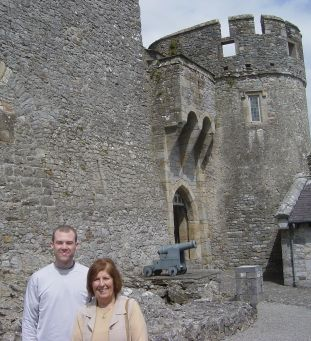

|
Eoin was born and raised in Clonmel. His childhood home is still there, and his parents still live in it. For a few days, it would be my home-away-from-home.
We came to Clonmel via Eoin's mom's car, having picked us up in Kilkenny where we had arrived via train from Dublin. Eoin's parents were superior hosts. In fact, Eoin's mom provided us with full-service tours (roundtrip transportation and expert insight) of two nearby historical landmarks: Cahir Castle and The Rock of Cashel. The photo at right shows myself and our guide at Cahir Castle. I do not have many photos of Clonmel, but it seemed like a cool place to live. Quiet, friendly, and green (yes, it rained there too). |
 |